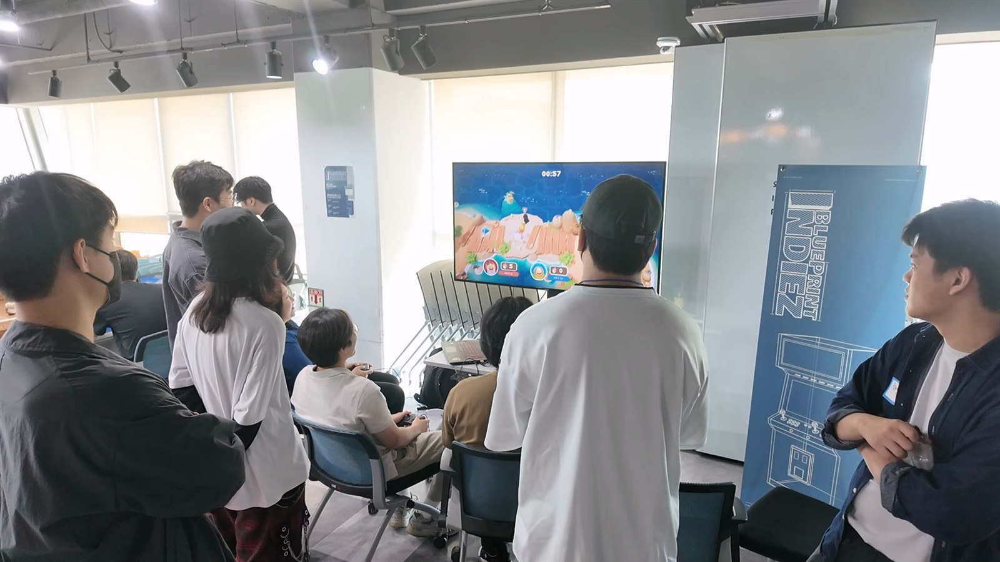
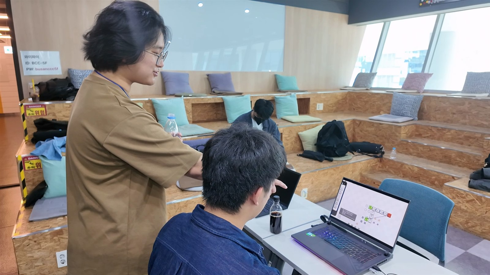
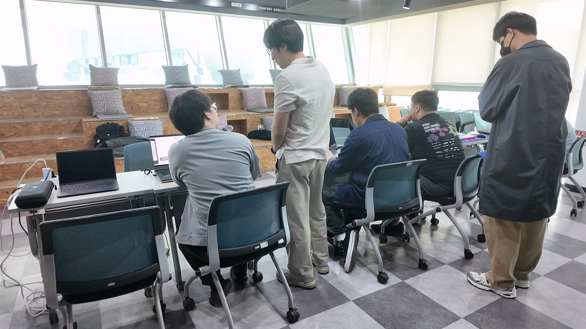
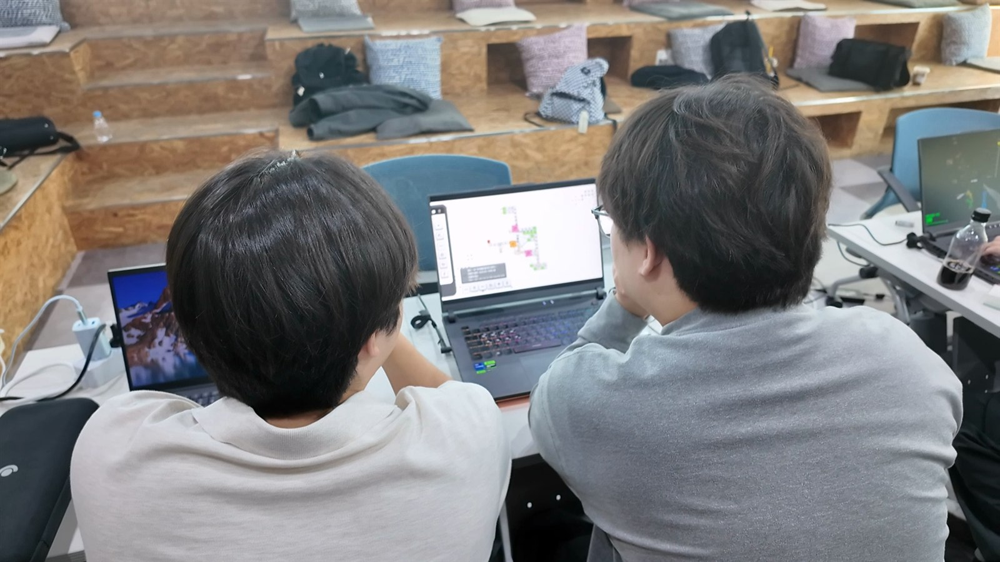
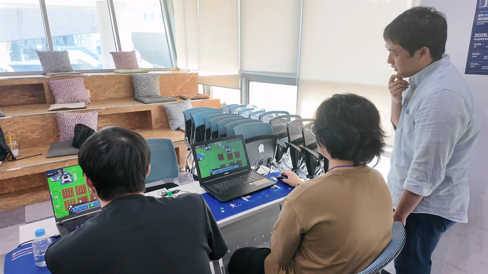
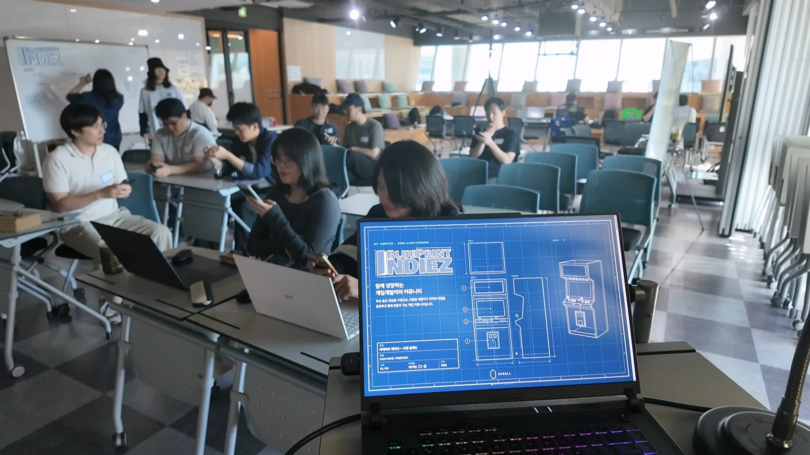
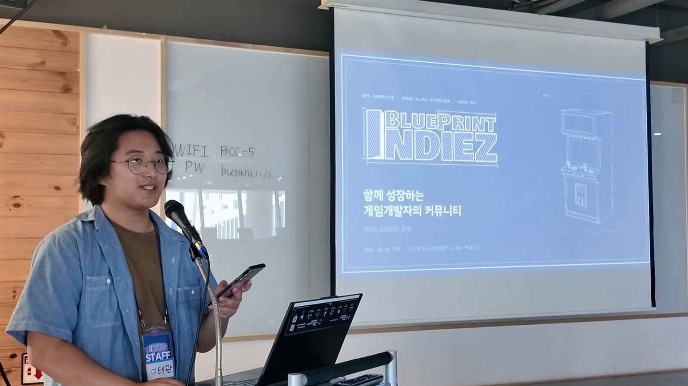
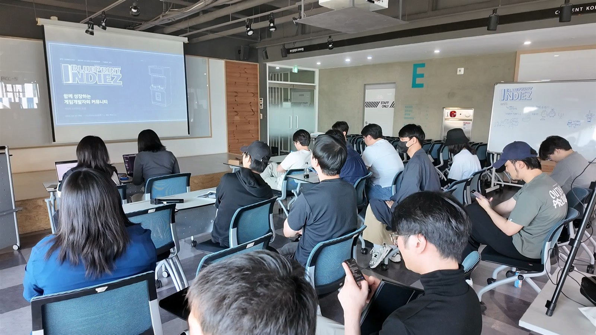

SHEET 01 · 현장 준비
첫 만남을
준비하는 시간
입구에 배너를 세우고, 화이트보드에 BluePrint Indiez의 이름을 적었습니다. 참가자들을 맞이할 공간을 준비했습니다.


SHEET 02 · 시연과 교류
게임 앞에서
시작된 대화
노트북과 모니터 앞에 모여 게임을 플레이했습니다. 화면을 함께 들여다보고, 만든 사람의 이야기를 들으며 서로의 작업을 알아갔습니다.










SHEET 03 · BPI 소개
우리가
모인 이유
BluePrint Indiez가 어떤 커뮤니티인지 소개했습니다. 각자의 작업을 공유하고 함께 성장하는 모임을 만들고자 한다는 이야기를 전했습니다.





